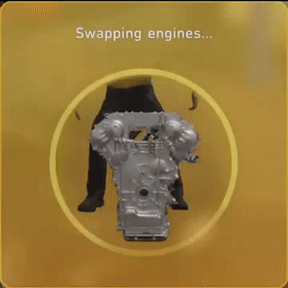

ZZW30 - Engine Swaps

Known Engine Swap Index
2ZZ-GE
K20/24
Frankenstein Motorworks' 2AR
3S-GTE
Here are some considerations for engine swaps:
What are your goals? More power, reliablity, street cred?
What's your budget?
What's your time horizon?
What's your state's regulation?